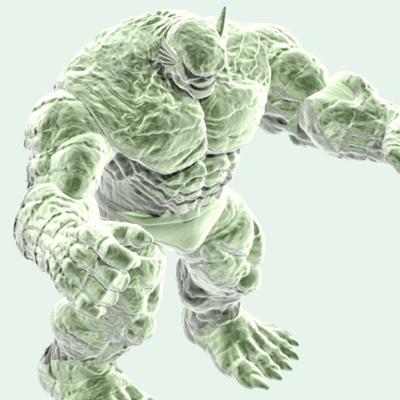
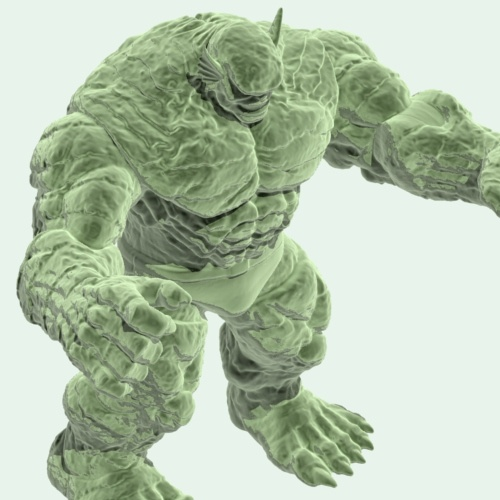
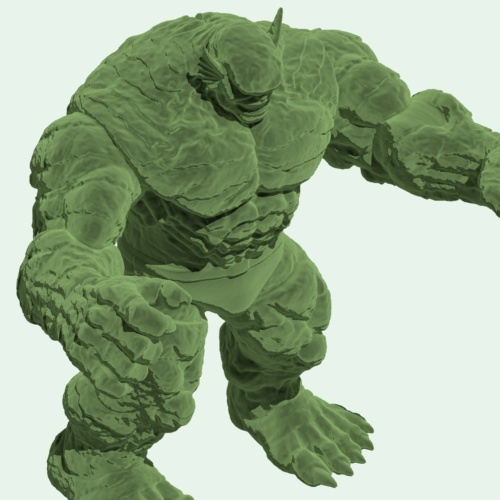

4.0.4
05 Aug 2020
MtoA 4.0.4 is a minor feature release, that uses Arnold 6.0.4.0 . It is fully binary compatible with 4.0.* versions.
This release includes several IPR update issues, an improved Tx manager, a new Log Window in the Arnold RenderView, as well as several other improvements and bugfixes.
Installation
- Download the Arnold for Maya plugin
- Follow these installation instructions .
Autodesk Network Licensing in Arnold 6 requires new license files with an updated 2020 version . Please follow the instructions on this page to generate your license file. More info about Arnold 6 licensing can be found here .
Compatible Maya Versions
- Maya 2018
- Maya 2019
- Maya 2020
System Requirements
- OSX 10.11 or later
- Windows 7 or later, with the Visual Studio 2015 redistributable
- Linux with at least glibc 2.12 and libstdc++ 3.4.13 (gcc 4.4.7). This is equivalent to RHEL/CentOS 6
- CPUs need to support the SSE4.1 instruction set
- Optix™ denoiser requires an NVidia GPU with CUDA™ Compute Capability 5.0 and above
- Arnold GPU works on Linux and Windows and requires an NVIDIA GPU of the Turing, Volta, Pascal, or Maxwell architecture. We recommend using the 450.57 or higher drivers on Linux and 451.77 or higher on Windows. See Arnold GPU for more information.
Enhancements
- Log window in the Arnold Renderview : The Arnold RenderView now includes a new Log window reporting exclusively the Arnold rendering logs. The logs can be filtered by severity (errors, warnings, info, etc...), and be saved to a file. (mtoa#2748)
- Improved TX Manager : The TX Manager has been highly improved and is now dockable in the Maya UI. (mtoa#2534)

- LOD visibility is now respected: If geometry in the scene uses maya LOD visibility it is now respected by MtoA (mtoa#4259)
- IPR update fixes : We have introduced multiple improvements to the IPR updates
- Issue with deformation motion blur with vertex amount changes (mtoa#4101)
- update motion blur changes (mtoa#4126)
- group / ungrouping lights (mtoa#4238)
- Adding matte to curve collector : The curve collector node now has the matte attribute exposed to easily apply matte output to the curves (mtoa#4189)
- Alembic export always exports normals : The MtoA alembic exporter was previously only exporting normals if they were changed in any way from their default smoothness. Users can force normals to not be exported either by using the -noNormals flag on the arnoldExportAlembic command or adding the custom boolean attribute noNormals to the individual geometry (mtoa#4193)
Arnold Enhancements
Automatic file path remapping : String parameter values can now be automatically modified according to the OS Arnold is running on. For example, this is useful when the artist workstations are running Windows but the renderfarm nodes are running Linux. Configuration is done with a JSON file that contains the strings to search and replace for each OS. This configuration file can be selected through the
ARNOLD_PATHMAPenvironment variable. (9311) For example:{ "windows": { "this_path/": "some/other_path/windows/" }, "mac": { "this_path/": "some/other_path/mac/" }, "linux": { "this_path/": "some/other_path/linux/" } }Rim light control for the Toon shader : A new
rim_light_tintfloat parameter was added to thetoonshader to tint the color of the rim light using the base color of the surface. See the full documentation . (9003)   0 (default) 0.5 1
Performance improvements on Windows with many cores and texture-heavy scenes : Several performance improvements have been made, particularly for those running Windows, using many cores, tiff based textures, and/or reading many textures/sec. Expected speedups can be anywhere from a few percent to orders of magnitude faster on many-core Windows machines. (9515, #9685, #9686, #9695, #9709, #9761) For a medium complexity scene that uses exr based .tx textures we get the following speedups on Windows :
CPU Arnold 6.0.3.0 Arnold 6.0.4.0 Speedup AMD 3970X (64 threads) 439s 397s 1.11x AMD 3990X (128 threads) 379s 267s 1.42x AMD 3995WX (128 threads) 351s 276s 1.27x Intel Xeon 8280 x 2 (112 threads) 356s 337s 1.06x Intel i9-9980XE (36 threads) 748s 720s 1.04x For a texture heavy stress scene (8GB of tiff based .tx texture tiles end up being read in) we get the following speedups on Windows:
CPU Arnold 6.0.3.0 Arnold 6.0.4.0 Speedup AMD 3970X (64 threads) 2002s 9.9s 202x AMD 3990X (128 threads) 2103s 10.1s 208x AMD 3995WX (128 threads) 2130s 9.0s 237x Intel Xeon 8280 x 2 (112 threads) 1585s 11.2s 142x Intel i9-9980XE (36 threads) 1145s 16.8s 68x String parameter path metadata : A new
pathmetadata can be assigned to string parameters to give specific hints about how they will be handled. Currently available values are:file,folderandfolderlist. Arnold will expand environment variables, apply the remapping, and handle backslashes on string parameters with the metadata. (4969)AA_adaptive_threshold in log : The
options.AA_adaptive_thresholdused is now output in the log file. (9841)Upgraded OSL : Arnold now uses OSL 1.11.6 bringing multiple optimizations and bug fixes, see the full list of changes. (8917)
GPU Enhancements
- Global AOV shaders : The
aov_shaderoption is now supported on GPU. This option defines a list of shaders that the renderer will evaluate after the regular surface shader. With this, it's possible to add shaders to set specific AOVs without modifying the original shader tree. See the option documentation . (9394) - Initial support for attributes in OSL : You can now retrieve user data bound to shapes via the
getattributefunction or via alockgeomparameter attribute. This initial implementation still has some limitations when compared to the CPU implementation. Queryable attributes are currently restricted to those bound to the current shaded shape and attributes of the active render camera. Querying node parameters is also not yet supported. (9666) - Initial support for tracing in OSL : You can now use the
tracefunction to trace rays in OSL shaders along with thegetmessagefunction to retrieve information regarding any intersected object. This initial implementation has the restriction that you cannot yet query parameters on an intersected object. (9797)
Incompatible Changes
- Replaced @ by / for internal MtoA node names : To make node names compatible with other formats like USD we now export all non-scene generated nodes with a '/' instead of an @, this may affect the use of operators to get set shader parameters based on the node name (mtoa#4245)
- AiMsg* changes : Changes have been made to how logging behaves. Now the log session is for the life of the Arnold process instead of just between
AiBegin/AiEndpairs. If messages are not showing up or too many messages show up, you might need to set the logging flags and other options before callingAiBegin. Another change is that you can now set the log filename at any point in time, each timeAiMsgSetLogFileNameis called the previous file will be closed and the new file will be created. See the API documentation for the full set of functions. (9575) - Increased default texture maximum memory : The
options.texture_max_memory_MBdefault value has been raised from 2048MB to 4096MB. (9846)
Bug Fixes
mtoa#3713 MtoA installer doesn't work with Python 3 based Linux (RHEL 8)
mtoa#4101 [ARV] breaks with IPR and Deformation Motion Blur vertex changing error.
mtoa#4278 [ARV] log window hangs maya
mtoa#4188 [ARV] Add menusFilter to OpenRenderView
mtoa#4240 Add additional bifrost graph default shader assignments to ignore
mtoa#4259 Arnold is not respecting Maya LOD visibility
mtoa#4189 Curve collector doesn't expose matte
mtoa#4243 Don't crash if Bifrost serialized data is empty
mtoa#4126 IPR doesn't update until camera move when changing motion blur length
mtoa#4269 Operator UI: Assignment expression editor always puts single quotes around the value
mtoa#4251 Set proper ID to aiViewRegion
mtoa#4238 Ungrouping a light (skydome) needs updating in the IPR
mtoa#3583 VP2 aiRectangleAreaLight.xml errors when command line rendering.
mtoa#4193 alembic export ignores normals if they default values
mtoa#4255 error when adding override to objectSet in 2021
mtoa#4256 error when removing AOV via "remove AOV" menu
#9828 AiMetaDataGet/Set functions crash with a NULL node entry
#9746 [Alembic] sampled faceset data causes crash
#9816 [Alembic] Velocities data on curves not applied correctly
#9515 Allow IPR to properly scale past 64 cores on Windows
#9809 Allow maketx to use either single dash or double dashes for arguments
#9684 Arnold ignores non-linear output color spaces on images wider than 8 bit
#9020 Back slashes in strings get changed to forward slashes when queried or written to .ass
#9672 Better duplicate output detection
#9749 BVH with 3+ motion keys is missing AiProfileBlock
#9575 Crash when calling AiMsg while the Arnold session is ending
#9725 [GPU] Arnold prematurely runs out of memory with on demand textures
#9748 [GPU] Crash in GPU prepare when failing to compile programs
#9794 [GPU] fov not set when using custom perspective camera
#9852 [GPU] GPU crash with multiple shaders connected to the UV camera post_bake
#9580 [GPU] Incorrect "Insufficient device memory" error when using NVLink
#9692 [GPU] Incorrect result when calling user data shaders from uv_camera.post_bake
#9771 [GPU] OptiX denoiser incorrectly accumulates feature buffers in progressive mode with multiple filters
#9774 [GPU] OSL: Don't throw exceptions when getattribute is called
#9636 [GPU] OSL texture crash when toggling devices
#9202 [GPU] Precision issue in bump mapping
#9532 [GPU] Random crash during the GPU prepare stage
#9801 [GPU] "Unable to load Optix library" error on Tesla and TCC GPUs on Windows
#8956 kick logs show superfluous plugin loading messages before official log start
#9758 Make smart opaque robust to numerical precision error
#7934 mesh_light with degenerate triangles has poor performance
#9522 [OSL] Arnold can fail to find stdosl.h when the path to Arnold contains specific characters on Windows
#9840 [OSL] Crash when SIP is enabled on MacOS 10.14 when using OSL
#9607 Parsing errors in ass file parameters should abort scene loading
#9659 Potential memory leak when using _triggers_reinitialize metadata
#9753 Prevent texture cache from being smaller than 2GB
#9863 Print license error details at warning level
#9845 Python binding for AiParamGetType returns c_int instead of c_uint8
#9762 Slow build with many ginstances of many-prim objects
#9595 Slow node update of VDB volumes on Windows and Linux even when volume did not change
#9610 Spurious render message when using -default_nodes in kick
#9644 Using AOV write shaders increases texture usage
#9638 Wrong exterior illumination with portal lights in interior_exterior mode
usd#463 Texture coordinates of texcoord2f type are not read correctly